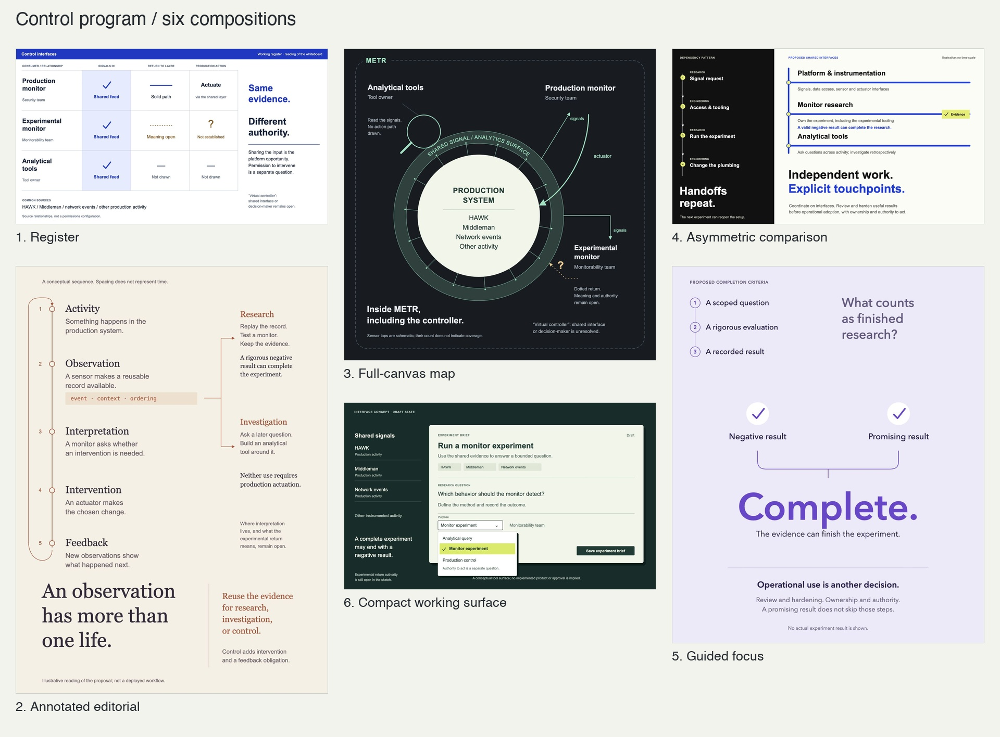

Six approaches to information
Approved composition references. Each approach chooses its own entry point, reading order, proportions, and visual language. Open an example for the editable SVG and a text equivalent.
- Register — Cobalt worksheet
- Annotated editorial — Warm paper and serif
- Full-canvas map — Graphite and mint
- Asymmetric comparison — Black, electric blue and yellow-green
- Guided focus — Lavender, sparse and centered
- Compact working surface — Forest, sage and citrus

The control-program content belongs to these examples only. Transfer the approach to new facts. Static concepts do not imply working controls, approvals, or measured improvements.